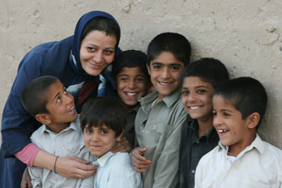

پذيرش > تریبون > گزارش كمپين > ای زن، به پا خیز از نو/ گزارشی از چندهمسری و عروسان خردسال در زاهدان


 ای زن، به پا خیز از نو/ گزارشی از چندهمسری و عروسان خردسال در زاهدان ای زن، به پا خیز از نو/ گزارشی از چندهمسری و عروسان خردسال در زاهدان
11 دی 1386 - تقدیم به مریم حسین خواه که قرار بود دراین سفر با هم باشیم و در ارائه گزارش نیز.../ محبوبه حسین زاده - نسخه قابل چاپ
می گوید: « من از شهری آمده ام که زنانش با انداختن سه ریگ بر زمین طلاق داده می شوند بی هیچ ثبتی و بی هیچ حق و حقوقی؛ از شهری که دخترانش در سن یازده سالگی به عقد مردانی درمی آیند بسیار بزرگتر از خود و حتی همسر چندم مردانی می شوند که هم سن پدربزگ شان است آن هم به اجبار پدر. از شهری آمده ام که وقتی مردی، برای پنجمین بار زن می گیرد، زن اول بدون هیچ قانون نانوشته ای طلاق داده می شود باز هم بدون هیچ حق و حقوقی.»
تکرار مدام جمله« زنانی که هیچ حقی ندارند» ما را نه به سوی شهر او بلکه به سوی منطقه ای می کشاند که زنان، دختران و کودکان هم از تبعیض های قانونی رنج می برند و هم از تبعیض های عرفی و سنتی.
کودکان بی هویت زنان ایرانی
اولین چیزی که در کوچه پس کوچه های اصلی شهر و بعد از آن هم در خیایانهای مناطق حاشیه ای شهر زاهدان، توجه را به خود جلب می کند کودکان دستفروش هستند؛ در یکی از کوچه ها، دو پسر و یک دختر کوچک با چاقویی کوچک و دسته دار مشغول بریدن تکه ای پارچه هستند تا آن را برای تزئین گاری دستی ای استفاده کنند که اجناس حقیری بر آن گذاشته می شود و به فروش می رسد؛ در یکی از مناطق حاشیه نشین زاهدان با نام مشهور شیرآباد که دارای جمعیتی زیاد هم هست؛ کودکان بسياري هستند که یا در کنار گالن هايي سفيدرنگ پر از بنزین نشسته اند و یا این گالن ها را به سختی حمل می کنند و برای فروش آن به سوی ماشین ها می دوند؛«ده ساله، دوازده ساله». اکثرشان در همين رده سني قرار دارند ولی از هر کدام که می پرسیم مدرسه نرفته اند و سواد خواندن و نوشتن هم ندارند...و همین طور است پسر دیگری با لباسی پر از لکه های خون بر تن که در گوشه بازار محقر منطقه که با تیر و تخته الم شده و چند گاری پر از اجناس، مشغول کندن پر مرغهایی است که به صورت زنده به فروش می رسند و یا پسرک دیگری که نخودشور می فروشد. بعدها با صحبت های اهالی متوجه می شویم که در این منطقه بیشتر کودکان شناسنامه ندارند و دلیل این موضوع را هم بعدتر می فهمم آن هم در جلسه ای که مدیر کل اداره ثبت احوال استان سیستان و بلوچستان آمده است تا بگوید:« در سیستان و بلوچستان، افراد زیادی بدون ثبت رسمی ازدواج به صورت کاملاً سنتی با هم زندگی می کنند به طوری که با استناد به آمار سال ۸۳، بیش از ۴۰درصد ولادت نوزادان در استان متعلق به پدر و مادرهایی بوده که ازدواج شان ثبت نشده است.»

روحانی دلیل این موضوع را رواج فرهنگ عشیره ای و سنتی می داند و وقتی از کارهایی می گوید که برای شناسنامه دارشدن افراد و ثبت ازدواج ها کرده اند، با انتقاد از وی در مورد وضعیت این کودکان می پرسم. با خونسردی پاسخ می دهد:« این کودکان، حاصل ازدواج مادران ایرانی و پدران افغانی هستند و چون تابعیت ایرانی به آنان تعلق نمی گیرد، شناسنامه ای هم ندارند»!!!
ازدواج در سن ده یازده سالگی
می گویند در مناطق حاشیه نشین شهر زاهدان، خانه هایی فراوان است که در هر اتاق آن یک خانوار زندگی می کنند. فرصتی پیش آمد که ما هم وارد یکی از این خانه ها شویم؛ مادر، خواهر، همسر، همسر برادر؛ پدر و دو برادر مردی که ما را به داخل خانه اش فرامی خواند و البته چند بچه کوچک در یک تک اتاق زندگي مي کنند. يکي از عروس ها 27 ساله است و مادر پسري 12ساله و نوزاد دختري چندين ماهه. وقتي مي پرسم در چه سني ازدواج کرده مي گويد:«10 سالگي»!!!
و بعدها افراد دیگری می گویند که در برخی از شهرهای منطقه سن ازدواج همین است؛ ده یازده سالگی. هرچند اگر ازدواج شان به صورت رسمی هم ثبت می شد، بازهم قانون مانعی نبود بر سر راه ازدواج دختر ده ساله ای که مسلمن هنوز درک درستی از دوست داشتن و انتخاب ندارد تا چه برسد به ازدواج؛ قانون مدنی که ماده 1041اش می گوید:« مدنی عقد نکاح دختر ۱۳ ساله و پسر ۱۵ ساله منوط به اخذ اجازه ولی (پدر و جد پدری) یا حکم دادگاه است.». آماری که شاید ندانسته منتشر شد، هرچند هیچ نگرانی ای در مسئولان ایجاد نکرد، تائیدی بود بر استفاده به جا و صحیح از این ماده قانونی؟!!! آمار رسمی سازمان ملی جوانان از وجود ۳۰هزار نوجوان متاهل ۱۰تا ۱۴ساله ایرانی خبر می داد؛ ۲۴هزار و ۵۰۶نفر از این افراد متاهل دختران زیر ۱۴سال بوده اند.( آمار در مهرماه امسال منتشر شد و مربوط به سال 1383است)
برخی از نمایندگان مجلس، این آمار را مخدوش اعلام کردند ولی چند روی بعد خبری روی خروجی یکی از خبرگزاری ها قرار گرفت که تائیدی بود بر صحت این خبر. هرچند یک ساعت بعد این خبر از خروجی خبرگزاری حذف شد، اما خبر که مربوط به آمار جدیدی بود که از سوی نماینده قوه قضائیه در جلسه شورای اجتماعی -فرهنگی زنان ارائه شده است، تاییدی مجددی است بر ازدواج کودکان ایرانی. این آمار از ۴۲۲۱۳مورد صدور حکم رشد خبر می دهد.
نسرین ستوده، وکیل دادگستری، می گوید: «طبق قانون مدنی ایران حداقل سن ازدواج برای دختران ۱۳ سال و برای پسران ۱۵ سال است اما با مراجعه به دادگاه و تقاضای صدور حکم رشد، قاضی چند سوال از کودک می پرسد و حکم رشید بودن را برای وی صادر می کند و بدین ترتیب اجازه ازدواج وی داده می شود.»
او صدور گواهی رشد را فقط مربوط به ازدواج نمی داند و می گوی: «گاهی از دادگاه ها درخواست صدور حکم می شود برای اینکه یک کودک بتواند تصمیم گیری کند که حضانتش با مادر باشد یا با پدر. همچنین گاهی حکم رشد برای این گرفته می شود که کودک بتواند معامله مالی انجام دهد.»
البته چون آمار ارائه شده از سوی بداغی نماینده قوه قضائیه، در جلسه شورای فرهنگی - اجتماعی زنان دعاوی مربوط به مشکلات خانوادگی بوده است پس تقاضای صدور حکم رشد برای انجام معاملات در این مقوله نمی گنجد.
وقتی به سراغ یکی از نمایندگان مجلس می روم آن هم یک نماینده زن عضو کمیسیون حقوقی و قضائی و از او می پرسم:« آیا زمان آن نشده است که فکری برای تغییر این ماده قانونی شود؟ آیا با ازدواج آن هم در سن 10سالگی، یک دخترابتدایی ترین حقوق قانونی خود یعنی حق تحصیل را از دست نمی دهد در حالی که تحصیل تا مقطع ابتدایی اجباری است و البته آقای رئیس جمهور به تازگی مصوب کرده تحصیل تا دبیرستان اجباری است و والدین متخلف جریمه می شود؟ و آیا یک دختر ده ساله که به بلوغ فکری نرسیده است، می تواند مسئولیت اداره یک زندگی را برعهده بگیرد؟» با بی تفاوتی پاسخ می دهد:« هستند دخترانی که در سن ده یازده سالگی مثل یک زن بیست ساله می فهمند.»
و وقتی می گویم: مسلمن این ازدواج به انتخاب خود این کودکان نیست و باید قانون از آنان حمایت کند و جلوی این ازدواج ها را بگیرد، می گوید:« خانواده ها نباید کودکان شان را وادار به ازدواج کنند پس باز هم ربطی به قانون ندارد و با فرهنگ سازی جلوی این موضوع گرفته شود. شما هم بروید فرهنگ سازی کنید.»
تلاش برای تغییر؛ تغییر برای برابری
و اما در منطقه ای که از زبان برخی مردم شنیدیم که به جای ازدواج، واژه« زن خریدن» و نه حتی «زن گرفتن» را به کار می برند، بودند و هستند جوانانی که به تنگ آمده از این همه تبعیض علیه زنان، تلاش می کنند تا با آگاهی رسانی به مردان و زنان، کاری برای بهبود وضعیت آنان انجام دهند.
فرصتی دست داد تا با آنان از نزدیک آشنا شوم؛ بیشترشان پسر بودند و کمتر از پسران، دخترو همگی بسیار جوان. صحبت از تبعیض های قانونی علیه زنان بود و آنان همگی می گفتند که زنان این منطقه علاوه بر این تبعیض ها از تبعیض های عرفی و سنتی زیادی رنج می برند. از یکی شان که لباس بلوچی بر تن داشت، در مورد طلاق پرسیدم. می گفت:« ریش سفیدان قوم و یا محله جمع می شوند و در این مورد قضاوت می کنند. اکثر زنها هم که در این موارد حرفی نمی زنند و نمی توانند از خودشان دفاع کنند، اگر ریش سفید حکم به طلاق داد، مرد سه تا سنگریزه بر زمین می اندازد و زن سه طلاقه می شود.» و مهریه و حق و حقوقی به این زن تعلق نمی گیرد چرا که قبل از ازدواج، پولی از سوی خانواده داماد به پدرعروس داده می شود. می پرسم: اگر زنی بخواهد طلاق بگیرد:« حق طلاق با مردان است و فقط مرد می تواند زن را طلاق بدهد.» ...و باز صحبت از تبعیض بود و همان حرفهایی تکرار می شد که انگیزه سفرمان شده بود به این شهر.
بیشتر این جوانان که با درد از درد زنان این شهر می گفتند، برای تحصیل به این شهر آمده بودند. اما حجم تبعیض ها نگذاشته بود بی تفاوت از کنار زنانی رد شوند که تنها پاسخ شان به این همه تبعیض، درماندگی است و صبوری.
دختری که ساکن شهری دیگر از همین استان بود، با درد می گفت:« اینجا پاسخ به پافشاری زنان برای رسیدن به خواسته هایشان با مرگ داده می شود. دخترانی در خانواده هایی هستند که اگر حرف از ادامه تحصیل بزنند، کشته می شوند وای به حال نه گفتن به ازدواج اجباری. باید در این شرایط چکار کرد؟»
باید چکار کرد در شرایطی که در آنجا با حجم عظیم فقر و کمبود امکانات، دختران برای ادامه تحصیل تهدید به مرگ می شوند و در پایتخت، دخترانی دیگر به دلیل تلاش برای تغییر قوانین تبعیض آمیز راهی زندان می شوند. با کدام قانون حمایتگر باید به حمایت از این زنان برخاست؟
این جوانان، اعضای کمپین یک میلیون امضا بودند. جوانانی که برایشان مهم تر از رسیدن به عدد یک میلیون امضا؛ تغییر وضعیت رقت بار زنان و کودکانی است که نمی توان به همین راحتی از کنار حجم عظیم تبعیضی که از آن رنج می برند، گذشت. گفتیم ازآگاهی ای که قرار است خواسته عمومی شود و عاملی برای تغییر قوانین تبعیض آمیز علیه زنان. گفتم و گفتند از مسیر سختی که در پیش دارند، از بذر آگاهی ای که قرار است با همه سختی ها، در دل زنان و مردان کوچه پس کوچه های محلات دوردست شهرهای دور سیستان و بلوچستان جوانه زند.
و بالاخره روزی می آید که کودکان برهنه پای کوچه پس کوچه های زاهدان هم سرودی برای خواندن بلد باشند؛ از همان سرودهایی که همه مان در کلاس های مدرسه آموختیم؛ نه به جرم این که حاصل ازدواج مادران ایرانی با مردان افغان هستند، شناسنامه ای نداشته باشند برای مدرسه رفتن... می آید روزی که دیگر دخترکان ده ساله شهربه جای خانه شوهر، دست در دست به سوی مدرسه ها بروند؛ شاید آن روز این دخترکان زمزمه کنند سرودی را که از مادران شان به یاد دارند، سرودی را که می گفت: ای زن به پا خیز از نو...
ارسال به
بالاترین
،
توییتر
،
فریندفید
،
فیسبوک
در همين بخش :
 دهمین دورۀ مراسم تندیس صدیقه دولت آبادی ۱۳۹۲ دهمین دورۀ مراسم تندیس صدیقه دولت آبادی ۱۳۹۲
کارت پستالهایی به بهانهی هشت مارس و به یاد همهی مبارزین راه برابری
بیانیه بیش از 350 تن از مدافعان حقوق زنان به مناسبت روز جهانی زن؛ زنان هر روز فرودستتر میشوند
لباسی که برای تن ما دوخته اند! /اعظم بهرامی
چالشها و چشمانداز فعالیت مدنی زنان
ديگر بخش ها :
طرح یک میلیون امضا
|
مقالات
|
سایت نوشته ها
|
اخبار
|
گزارش كمپين
|
گفت و گو
|
علیه سکوت
|
كوچه به كوچه
|
نامه های شما
|
گزارش ویژه
|
گفتگو با اعضا
|
ویژه سالگرد کمپین
|
تصویر برابری
|
دل آرام علی
|
تریبون
|
مقالات
|
تاریخ شفاهی
|
خارج از چارچوب
|
کتابخانه
|
درباره کمپین
|
کمپین در شهرها
|
کمپین در بند
|
صدای تغییر
|
ویژه 22 خرداد
|
لایحه حمایت از خانواده
|
گالری
|
عشا مومنی
|
امیر یعقوبعلی
|
خدیجه مقدم
|
راحله عسگری زاده و نسیم خسروی
|
پروین اردلان،جلوه جواهری، مریم حسین خواه، ناهید کشاورز
|
زینب پیغمبرزاده
|
سعیده امین، سارا ایمانیان، محبوبه حسین زاده، ناهید کشاورز و همایون نامی
|
احترام شادفر
|
نسیم سرابندی زاده،فاطمه دهدشتی
|
وبلاگ مهمان
|
پرونده خرم آباد
|
دستگیری ها
|
مریم مالک
|
پرستو اللهیاری
|
مهرنوش اعتمادی
|
سمیه رشیدی
|
Other Languages
|
همراهان
|
«فراخوان کمپین ده روز با بهاره هدایت»
| English
|